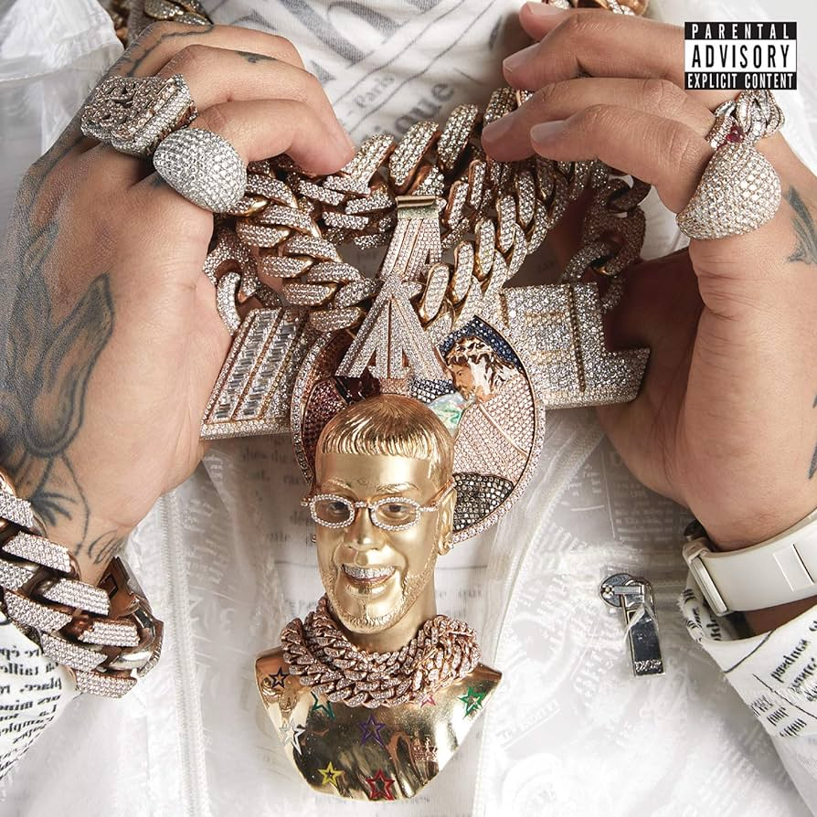
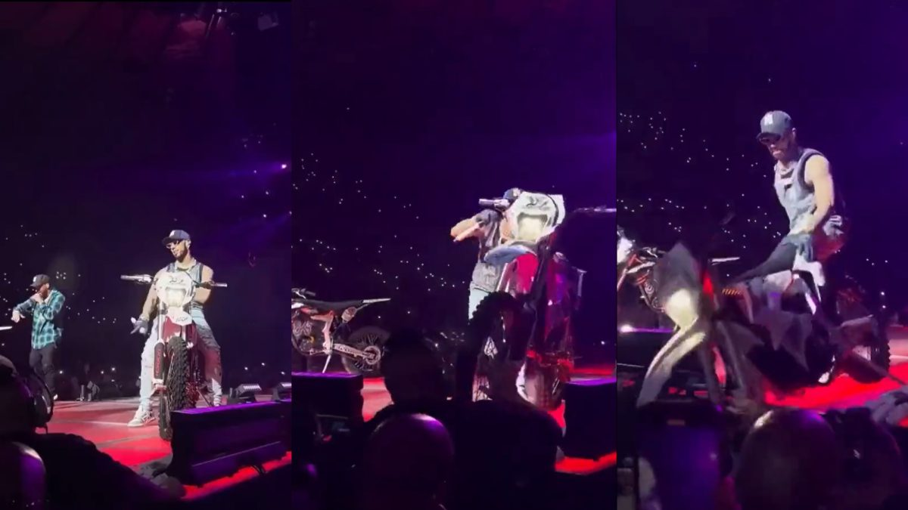
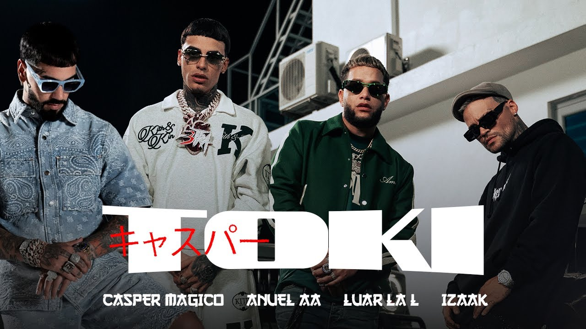
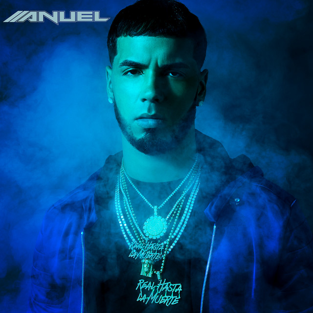
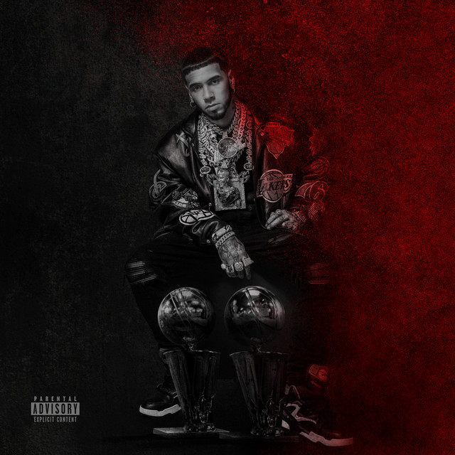

Anuel AA empezó su carrera en 2011 y continúa activo hasta la fecha.
La canción más popular de Anuel AA es "China", en colaboración con Daddy Yankee, Karol G, Ozuna y J Balvin, del álbum "Emmanuel".
El álbum más escuchado y vendido de Anuel AA es "Emmanuel", lanzado en 2019. Este álbum destacó por su variedad de ritmos que van desde el reguetón hasta el trap, y contó con colaboraciones de artistas reconocidos del género urbano como Bad Bunny y Ozuna. "Emmanuel" fue aclamado por la crítica y se convirtió en un éxito comercial, alcanzando los primeros lugares en las listas de música urbana en todo el mundo.
El primer concierto conocido de Anuel AA fue en 2018 durante su gira promocional del álbum "Real Hasta la Muerte". Este concierto inaugural tuvo lugar en San Juan, Puerto Rico, donde Anuel AA cautivó a sus fans con su energía y estilo único, estableciéndose como una figura prominente en la escena urbana.
Su último concierto registrado fue en Miami Beach en 2024 como parte de su gira mundial "Emmanuel World Tour". Este concierto fue un evento multitudinario donde Anuel AA interpretó sus éxitos más recientes y cerró con broche de oro esta exitosa etapa de su carrera.
La primera canción destacada de Anuel AA fue "Demonia", lanzada a finales de 2011 en colaboración con Ñengo Flow. Esta canción marcó el debut de Anuel AA en la escena musical urbana de Puerto Rico y rápidamente ganó popularidad entre los amantes del género.
La última canción de Anuel AA publicada es "TOKI", con la participación de Casper Mágico, Luar La L y Izaak. Esta canción, lanzada en 2023, muestra la evolución musical de Anuel AA, combinando ritmos frescos y colaboraciones innovadoras que han sido bien recibidas por sus seguidores.
"Real Hasta la Muerte" es el primer álbum de estudio de Anuel AA, lanzado el 17 de julio de 2018, coincidiendo con su salida de prisión. Este álbum fue un hito en su carrera, consolidando su reputación como uno de los artistas más influyentes en el reguetón y el trap latinoamericano.
"LLNM2" es el último álbum de estudio de Anuel AA, lanzado el 9 de diciembre de 2022. Este álbum es una continuación de su éxito anterior "LLegamos a la Disco", incluyendo colaboraciones con artistas como J Balvin, Ozuna y Nicky Jam, consolidando su posición en la cima de la música urbana.
Emmanuel Gazmey Santiago, más conocido por su nombre artístico Anuel AA, es un cantante y compositor puertorriqueño de reguetón y trap latino. Nacido y criado en un proyecto de vivienda en Carolina, Puerto Rico, Anuel es conocido por su estilo distintivo y colaboraciones con otros artistas prominentes en el género urbano. Desde su debut en la escena musical en 2011, Anuel ha sido reconocido por sus letras provocativas y su impacto en la cultura urbana internacional.